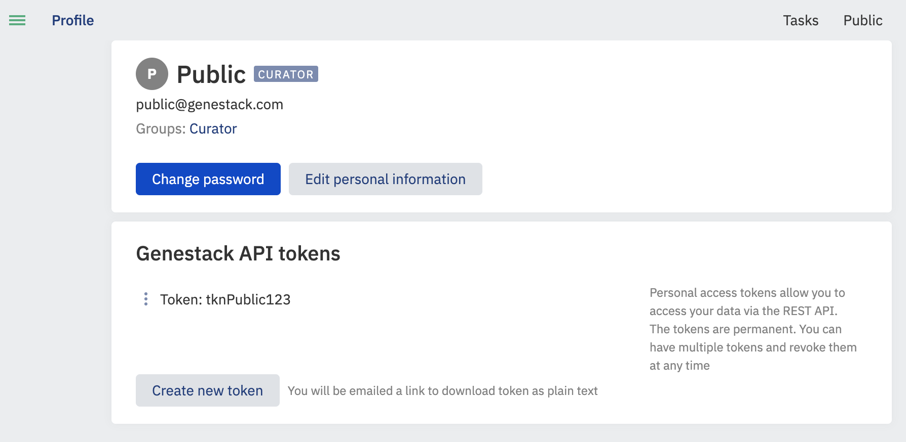

Genestack python client
How to set up the Genestack Python client¶
This article explains how to set up the Genestack Python client with a user and token, which then can be used by other scripts.
Requirements¶
- Python 3
- pip
Instructions¶
Install the client and bind a user¶
- Start a console/terminal and install Genestack Python client:
# Install the latest version
python3 -m pip install \
--extra-index-url https://public-nexus.devops.gs.team/repository/pypi-releases/simple \
genestack-client
# OR: Install a specific version starting from 1.53.12, usually the same as ODM version, e.g. 1.54.0
python3 -m pip install \
--extra-index-url https://public-nexus.devops.gs.team/repository/pypi-releases/simple \
genestack-client==1.53.12
- Obtain a token for your Genestack user by logging in to ODM and clicking on the profile link under the username. See an example for Public user below:

You need to click on the "Create new token" button, so you will receive an email with a link to your token. Please open the link in the email and save the token for future needs.
-
Set up your account with the Genestack Python client from a console
shell genestack-user-setup -H https://domain_name/frontend -
Type ‘add’ to enter a new user, enter an alias for the user.
- Enter the host name, which should be of the format: https://domain_name/frontend.
- Then select authentication method by token (1) and input the content of the token you received in step 2:
shell 1) by token 2) by email and password Select authentication: 1 Host: https://domain_name/frontend Please specify Genestack API token for "my_user": - Type ‘quit' to exit the user-setup.
To check the existing version, and view all available console commands, type:¶
python3 -m pip show --verbose genestack-client
You can always remove the package with a help of this command:¶
python3 -m pip uninstall genestack-client